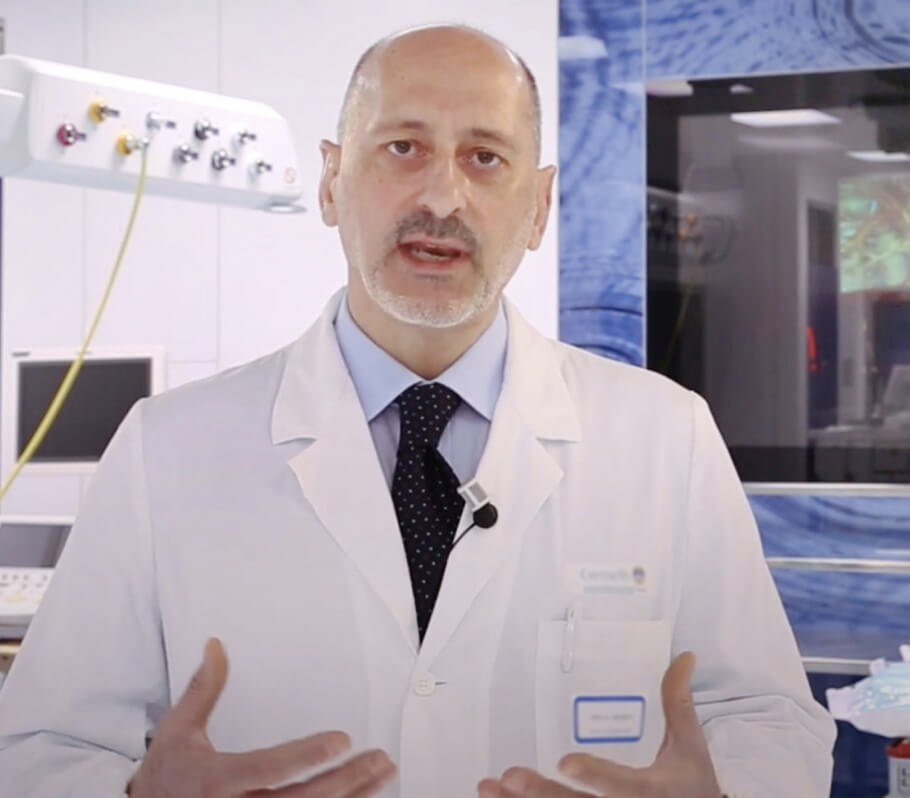

Всеки знае, че хипертонията, инсулта и инфаркта са последиците от "замърсяването" на кръвоносните съдове с холестерол. Мръсните кръвоносни съдове са причина за 9 от 10 предполагаеми нелечими хронични заболявания. И така, какво е хипертония и с защо е опасна?
Хипертонията е заболяване, което всеки трети възрастен жител на България страда. В същото време, по-голямата част от населението не е наясно с този проблем и следователно не прибягва до никаква превенция. Сред хората, които са наясно с болестта си, много от тях не получават адекватно лечение: приемат лекарства нередовно и в твърде малки дози или изобщо не ги приемат. Това отношение към тяхното здраве причинява много животозастрашаващи усложнения.
За да избегнете това, първо трябва да получите отговор на следните въпроси:

-
Какво трябва да знае човек за хипертонията?
-
Защо кръвоносните съдове са отговорни за 85% от вашето здраве?
-
Какво друго трови кръвоносните съдове, освен холестерола?
-
4 явни и 7 скрити признаци на лоши кръвоносни съдове.
-
Как безопасно да почистите кръвоносните съдове у дома?
На тези въпроси отговори проф. д-р Иво Петров, български кардиохирург, е един от основателите на Сити Клиник през 2012 г., където оглавява не само екипа по кардиология и ангиология, но е и медицински директор в г. София.
Драгомир Петров: "Професоре, винаги ли казвате, че кръвоносните съдове са отговорни за 85% от здравето на тялото? Защо е така?"
проф. Петров: “Кой е най-големият орган в човешкото тяло? Малко хора знаят, но всъщност най - големият орган е нашата кръвоносна система. Съдовете не са просто тръби, през които тече кръв. Това е един сложен орган, чиито проблеми незабавно водят до болезнени усещания.
Какво се случва, ако съдовете не се лекуват:
Заболявания на съдовете на краката-разширени вени, постоянен оток и тежест в краката, усещане за студ или непоносимо изгаряне в краката.
Запушване на съдовете, хранещи черния дроб-хепатит. След консумация на мазни храни - горчиво оригване.
Кръвоносните съдове в ставите, отслабени и замърсени - сух хрущял. Ставите стават крехки и болезнени, остеохондрозата надделява, образуват се дискови хернии.
Съдовете на аналния канал отслабват-хемороидалните възли са покрити с лилави подутини.
Слаби кръвоносни съдове на очите-зрението се влошава, има пулсиране в очите. Развива се катаракта.
И, разбира се, кралицата на съдовите заболявания, „Нейно Величество“-
хипертонията. Хипертонията е майка на инсулта и сестра на сърдечния удар.
„Няма щастие без здраве“ и няма здраве „без чисти кръвоносни съдове“!
Например, наднорменото тегло е тясно свързано с кръвоносните съдове кръвоносните съдове, запушени с холестерол, водят до недостатъчно хранене на органите, кръвоносните съдове не могат да ги доставят с необходимото количество хранителни вещества. В тази връзка, мозъкът изпраща сигнали-трябва да ядете. И органите все още нямат достатъчно храна поради запушване на кръвоносните съдове. Мозъкът отново дава команда-трябва да ядете. И така отново и отново.
Искате ли да живеете пълноценен живот? Почистете и ремонтирайте кръвоносните си съдове. Чистите кръвоносни съдове са ключа към преодоляване на 90% от хроничните заболявания, някои от които се считат за нелечими."
„Ако нормалната площ на напречното сечение на кръвоносния съд е равна на дебелината на пръста, тогава 5 кг холестеролни плаки намаляват площта на напречното сечение до размера на 4 клечки.“
Драгомир Петров:
"професоре, всеки знае, че холестеролът е вреден за хората. Той запушва нашите съдове, ограничава притока на кръв и нарушава кръвообращението. Само той ли е виновен?"
проф. Петров: "Да, точно така. Холестеролните плаки, известни също като атеросклеротични плаки“, са отговорни за около 60-70% от съдовото замърсяване. До 50-годишна възраст се натрупват до 5 кг холестеролни плаки. Холестеролните отлагания ограничават притока на кръв в съдовете 4-5 пъти.

Ако сте на възраст над 45 години и никога не сте приемали хранителни добавки за почистване на съдовете, гарантирам, че имате проблеми със съдовете. Кръвоносните съдове се запушват с холестерол, образуват се тромби-почти естествени процеси на стареене. Разбира се, съвременните храни, хапчета, пушене и алкохол ускоряват процеса на запушване 5-8 пъти. Най-малкият стрес, промяната на времето, магнитната буря, веднага се отразяват на здравето. Налягането се увеличава, замаяност, шум в ушите, главата започва да се разцепва, ставите болят.
4 заболявания, причинени от увреждане на кръвоносните съдове:
-
1. "Хипертония"
Основният симптом на хипертонията е главоболието. Това се дължи на стесняване на кръвоносните съдове в мозъка. В допълнение, честите симптоми на хипертония са усещане за тежест в главата, сърцебиене и замайване.
-
2. "Разширени вени"
Вените на краката са подути, неправилни и неестествени, тежки и болезнени. Холестеролът и тромбите запушват вените. Постепенно в очите се появяват съдови "звездички", които след това се превръщат в съдова"мрежа".
-
3. "Хемороиди"
Когато дренажните съдове в ануса се запушат, хемороидните възли набъбват. Ако първо се запушат кръвоносните съдове, тогава има пукнатини в ануса и след това разкъсване.
-
4. "Остеохондроза"
Това е липса на циркулация в хрущяла. Хрущялът се втвърдява и започва да се износва, без да има време за възстановяване. Той губи способността си да се поддържа. Солите не се измиват и започват да се натрупват неконтролируемо, образувайки кисти.
7 признаци на опасност:
-
1. "Подуване"
Вечер краката набъбват, чорапите стягат глезените, оставяйки следи. Подуто лице и торбички под очите. Отокът показва, че органите ви са подути.
-
2. "Шум в ушите"
От едва доловим писък до силни викове, които пречат на концентрацията. Това са последиците от повишеното налягане на мозъчните съдове, които притискат тъпанчето.
-
3. "Замайване"
Усещането за" интоксикация", резки и внезапни пристъпи на замаяност показват, че съдовата система"гладува". Слухът често страда.
-
4. "Безсъние"
Чувствате сънливост и летаргия, но не можете да заспите? Причината-недостатъчно кръвоснабдяване на хипофизната жлеза. Той спира да произвежда мелатонин-хормона на съня.
-
5. "Умора"
Нямате енергия. Не искате да правите нищо. Просто искате да си полегнете. Това чувство възниква, когато тялото ви влезе в режим на пестене на енергия. Вашите органи не получават достатъчно храна чрез замърсени кръвоносни съдове и тялото се опитва да намали нивата на активност, за да избегне смъртта.
-
6. "Проблеми със зрението"
"Мухи" пред очите, тъмнина и мъгла в очите. Това са симптоми на съдова недостатъчност на очите.
-
7. "Болки в ставите"
Заради времето-болки в ставите. Събуждайки се сутрин, не се чувствате будни и отпочинали, а като изтръпнали, полу-парализирани инвалиди. Синовиалната течност губи свойствата си, залепва ставите като лепило.
Обикновено хората в различни комбинации имат повече от един симптом по едно и също време. В същото време, те също имат различни симптоми в различни комбинации. Бедните хора се опитват да лекуват всяка болест поотделно. Таблетки за кръвно налягане, кремове за разширени вени, лекарства за хемороиди, гелове за остеохондроза и, разбира се, болкоуспокояващи. Те просто хвърлят пари на вятъра, но причината за всички болести винаги е една-това е нарушение на кръвообращението. Трябва да започнете с общо почистване на кръвоносните съдове."
„Повечето лекарства не помагат или не лекуват, а отслабват и увреждат вашия имунитет“
Драгомир Петров:
"какъв е най-ефективният начин за почистване на кръвоносните съдове от холестерола, кръвни съсиреци и калцификати?"
проф. Петров: "За безопасно почистване на кръвоносните съдове мога да прпепоръчам само един продукт с безупречна репутация – Cardiofort. Удължава живота от 12 до 17 години, снабдява с енергия и релаксира.
Cardiofort е 100% натурален продукт на базата на растителни екстракти, който при контакт с вода събужда живи почистващи вещества. Тези малки почистващи вещества отстраняват холестеролната слуз от кръвоносните съдове, както и съсиреци, залепени по стените: калцификати, остатъци от лекарства. Всичко, което пречи на свободния кръвен поток. Натрупаните от години замърсявания, които отравят живота ни, се измиват с Cardiofort след 1,5-2 месеца редовен прием.
Заедно с тях главоболието и тинитуса изчезват (шум в ушите). Мозъкът правилно е захранван от чисти кръвоносни съдове, работи със скоростта на суперкомпютъра. Мислите стават бистри и ясни.
Усещанията се усилват, чувате приятни звуци, които не сте обръщали внимание преди. Слухът се подобрява, дори можете да разберете тихия разговор в другата стая.
Ароматите играят с нови цветове, дишането е свободно и гладко. Свежият въздух запълва белите дробове, разпространява се през тялото с приятни вълни, предизвиквайки усещане за лека еуфория.
Вкусът става ярък и богат. Простата храна ще ви достави огромно удоволствие. Вие ядете по-малко, тялото се насища по-бързо. Постоянното желание за сладко и мазно изчезва.
Ставите вече не болят. "Скърцането" изчезва напълно и вместо това се появява гладкото движение, благодарение на възстановената хидратация на ставите."
Драгомир Петров:
"Впечатляващо. Всъщност това е първият път, когато чувам за Cardiofort. Чувал съм обаче за хранителните добавки като цяло. Япония и Израел официално са одобрили хранителните добавки като предпочитано лечение. И в България ли тези лекарства все още не се считат за надеждни? Защо?"
проф. Петров: "Позволете ми да ви разкажа една поучителна история за недоверието. През 1928 г. е изобретен първият антибиотик - пеницилин. Той лесно лекува дизентерия и тиф, от които хората неизбежно умират.
Въпреки това, повечето хора не вярвали, че това може да помогне, защото в миналото те са били разочаровани за стотен път, опитвайки се да се излекуват от тези заболявания. Тези, които бяха разочаровани за 100-тен път и не се уплашиха от 101-ия опит, се възстановили. А онези, които се предадоха, махнаха с ръка и казаха:" друго чудо, което няма да помогне", умряха, въпреки че тяхното спасение беше под носа им.
Както някога, пеницилинът побеждава често срещаните, по това време, заболявания: дизентерия, тиф и белодробна чума. Така че, с течение на времето Cardiofort ще премахне съдовите заболявания. Първите стъпки вече са направени-Япония, Канада, Корея, Швейцария и Израел въведоха закон за почистване на кръвоносните съдовете с хранителни добавки вместо лекарствена терапия. В България Cardiofort официално се изписва само на едно място – във Правителствена болница. В нея се лекуват "каймакът на обществото" - министри, членове на парламента, знаменитости и представители на елита. Те се лекуват според израелските протоколи. На останалите наши граждани Министерството на здравеопазването предлага лечение с химически препарати, които се произвеждат в заводи, принадлежащи на същия елит."
"Нашите съмнения са нашия предател и поради тях губим много от това, което бихме могли да получим от страх да опитаме."
Драгомир Петров:
"Какво ще стане, ако започна курс за почистване с Cardiofort?
Как работи този продукт?"
Проф. Петров: "Когато молекулите
Cardiofort са наситени с влага и кислород, лечебните екстракти придобиват ефекта на водороден пероксид - оксигенация". Молекулите на Cardiofort са малки кислородни бомби. Те разрушават холестеролните прегради в кръвоносните съдове и позволяват на кръвта да тече свободно. Това е причината, поради която Cardiofort е толкова ефективен - пиете живи екстракти, които работят активно. Съставът на капсулите осигурява незабавно усвояване на живите частици. Екстрактите, наситени с кислород, лесно се абсорбират от стените на хранопровода. Ето защо, Cardiofort не причинява киселини, горчивина в устата, оригване, не дразни червата и предпазва стомаха. Дори и да имате язва, можете свободно да използвате Cardiofort."
"Cardiofort е склад на редки лекарствени екстракти, които хармонично работят за чистотата и здравината на кръвоносните съдове."
Как ще се промени вашето здраве и благополучие:
ПОЧИСТВА КРЪВОНОСНИТЕ СЪДОВЕ
Дяволския орех премахва холестерола. Подобно на длето, молекулите на веществото отблъскват холестеролните частици, които се придържат към стените на кръвоносните съдове. Кръвният поток става безпрепятствен. Хрущялът най-накрая започва да се "храни". Скърцането в шията, гърба и ставите изчезват. Коленете и пръстите на краката вече не болят с течение на времето.
Кръвообращението на кожата ще се възстанови, звездичките и съдовата мрежа ще изчезнат. Разширените вени постепенно ще намалеят, хемороидните възли ще изсъхнат.
ПРИЛИВ НА ЕНЕРГИЯТА
В играта влизат молекулите на екстракта от хмелови шишарки. Те улавят холестеролните частици и, прикрепени към тях, се превръщат в полезни липопротеини с висока плътност, които участват в разграждането на мазнините.
Cardiofort убива два заека с един удар-премахва холестерола, замърсяващ кръвоносните съдове, и стимулира правилното изгаряне на мазнините. Благодарение на това чувствате мощен прилив на сила, искате да се движите повече.
НАМАЛЯВАНЕ НА НАПРЕЖЕНИЕТО
Антиоксидантът токоферол облекчава спазмите в кръвоносните съдове. Той е като "корените от валериана" за кръвоносните съдове. Той отпуска и успокоява кръвоносните съдове, които се стесняват поради липса на кръвен поток. Налягането се връща към нормалното, става гладко и безопасно. Главоболието изчезва, шумът в ушите изчезва, белите дробове и бронхите функционират лесно и гладко.
РАЗТОВАРВА СЪРЦЕТО
Маслото от рапица почиства кръвоносните съдове от кръвните съсиреци. Екстрактът от морски зърнастец разрежда кръвта. Дори малките аневризми се разтварят. Калциевите отлагания, оставени от химикалите, се измиват.
ЕФЕКТЪТ НА ПЕПЕРУДАТА
Cardiofort е като биенето на крилата на пеперуда, предизвиквайки вълнуваща верижна реакция в духа на промяната. Стъпка по стъпка Cardiofort предизвиква верижна реакция, която пречиства тялото, като се започне с изчистването на отпадъците, натрупани в продължение на десетилетия в кръвоносните съдове.
ЛЕСНО ПРОБУЖДАНЕ
Събуждате се сутрин и лесно ставате от леглото - не е нужно да се насилвате да ставате, да влачите и да разтривате скърцащите крака, гърба и шията.
УКРЕПВАНЕ НА КРАКАТА
Когато излезете от къщата, вече не трябва да се притеснявате за краката си - ходенето не е проблем. Можете да ходите цял ден и краката ви няма да се уморят или подуват.
АБСОЛЮТНО СПОКОЙСТВИЕ
Вие сте напълно спокойни и отпуснати. Вече нямате постоянна болка, която да поглъща съзнанието ви, без да ви позволява да се съсредоточите върху нищо друго. Когато нищо не боли, обикновените видове, звуци и миризми преливат от отдавна забравени впечатления.
ЯСНОТА НА МИСЛЕНЕТО
Дори и след тежък работен ден, вие се връщате вкъщи с ясен, светъл ум. Вашият мозък работи като швейцарски часовник, без да се чувства уморен.
ПЕРФЕКТЕН СЪН
И сега, лежейки в леглото, заспивате бързо и приятно. Отминаха дните, когато се въртеше в леглото в полунощ, непрекъснато обръщаше възглавницата, а сънят не идваше. Сега всичко е просто-вие решавате кога да заспите и тялото се подчинява на вашите команди.
"Това е невероятен и естествен начин за лечение на различни заболявания и подобряване на ежедневието на човека. И трябва да намерите начин да го добавите към живота си."
Програма "чисти кръвоносни съдове" е активна от г.
Cardiofort вече не се продава в аптеките.
Причината за конфликта е алчността на фармацевтичната мрежа, която изисква производителят Cardiofort да добави още 39 евро за всеки продаден артикул! Вече знаейки за високия марж на цената на производителя (цената на Cardiofort в някои аптеки в България достига 120 евро), фармацевтичните компании искаха да въведат допълнителна тарифа на производителя.
Представители на аптеките се оправдават-казват, че такава добавка им позволява да оцелеят. В края на краищата, Cardiofort е лекарство, което се купува на всеки 7-10 години. Освен това, след почистване на кръвоносните съдове, човек вече не се нуждае от лекарствата, които непрекъснато е приемал преди! Хората спират да снижават кръвното си налягане и вече не купуват болкоуспокояващи. Значително намалява приема на лекарства за диабет. И това води аптеките до загуби. Затова те поискаха най-високата цена за Cardiofort.
В резултат на това производителят Cardiofort - прекъсна контактите с всички и аптеките и премина към разпространение само по Интернет. Първо, това е справедливо. Преценете сами: няма нужда да плащате наем, аптеките не се нуждаят от подкупи, за да продават този продукт. Така че Cardiofort вече е на разположение като специална оферта.
Нашата клиника е заедно с Националния център за медицински изследвания в областта на сърдечно-съдовата хирургия и заедно с производителя
Cardiofort стартира олекотена програма в рамките на проект "Телемедицина (Медицина-Интернет)".
Всеки може да се регистрирате, за да получите Cardiofort на преференциални условия, офертата е валидна до
, или до края на запасите в регионалния склад на
Cardiofort. И всичко това въпреки липсата на реклама по радиото и телевизията. Хората споделят информация, препоръчват на роднини и приятели.
Условия за ползване Cardiofort.
Кандидатствайте чрез формуляра на нашия официален сайт.
Всичко това беше направено, за да се преборим със спекулациите за този продукт, когато се опитаха да закупят капки Cardiofort в големи количества и да ги препродадат със собствена надценка.
Кандидатствайте чрез официалния формуляр на нашата програма. Официалният формуляр за кандидатстване е гаранция за качество и защита срещу спекуланти.